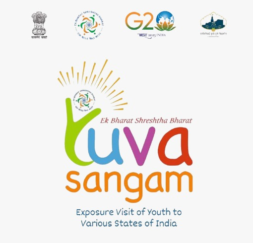
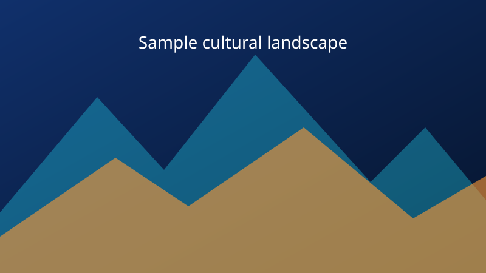

ENGLISH
Welcome to YUVA SANGAM! We are delighted to celebrate the cultural connection between Odisha and Himachal Pradesh.

Digital Cultural Welcome
Two States, One Spirit, A Celebration of Unity.
Hosted by Imperial College, Bargarh


Imperial College, Bargarh welcomes
Celebrating Cultural Unity Between Odisha and Himachal Pradesh
Welcome!
Warm greetings from Imperial College, Bargarh! We are delighted to welcome the students and faculty of NIT Himachal Pradesh. YUVA SANGAM celebrates the cultural richness of Odisha and Himachal Pradesh, bringing together traditions, ideas, friendship, and innovation.
Two States, One Spirit, A Celebration of Unity.
A welcome in four languages
Greetings celebrating the connection between eastern and northern India.
Welcome to YUVA SANGAM! We are delighted to celebrate the cultural connection between Odisha and Himachal Pradesh.
ଯୁବ ସଙ୍ଗମକୁ ହାର୍ଦ୍ଦିକ ସ୍ୱାଗତ! ଓଡ଼ିଶା ଓ ହିମାଚଳ ପ୍ରଦେଶର ସାଂସ୍କୃତିକ ସମ୍ପର୍କକୁ ଆମେ ଆନନ୍ଦର ସହ ପାଳନ କରୁଛୁ।
युवा संगम में आपका हार्दिक स्वागत है! हम ओडिशा और हिमाचल प्रदेश के सांस्कृतिक संबंध का उत्सव मनाते हुए प्रसन्न हैं।
यूवा संगम च तुहाड़ा सबना दा सुआगत ऐ! असें बड़ी खुशी ऐ कि अस्सी ओडिशा ते हिमाचल प्रदेश दे सांस्कृतिक मेल-जोल दा जश्न मना रहे आं। आओ, अस्सी अपणी परंपराएं, विरासत ते आपसी प्यार नूं सांझा करिए ते एकता दी भावना नूं होर मजबूत बनाइए।
Explore the geography
Odisha lies in eastern India, while Himachal Pradesh is in northern India. Select either marker to explore its capital and cultural highlights.
Traditions, craft and landscape
Selected cultural highlights from Odisha and Himachal Pradesh. Photographs load from Wikimedia Commons and require an internet connection.

Ikat (bandha) patterns are created by tie-dyeing yarn before weaving, a celebrated tradition of western Odisha.

A classical dance form known for sculptural poses, expressive storytelling and the tribhangi posture.

Puri’s annual chariot festival brings together devotion, community and a remarkable public tradition.

Bargarh is known for its open-air theatrical Dhanu Jatra and Nuakhai, the harvest celebration of western Odisha.

Snow peaks, deodar forests and high valleys shape the varied landscapes of Himachal Pradesh.
In parts of the hills, timber-and-stone Kath-Kuni construction reflects local materials and mountain knowledge.
A distinctive festival in which village deities gather at Dhalpur Maidan after Vijayadashami.
Kangra miniature painting, Chamba rumal embroidery, Kullu shawls and Nati dance express regional creativity.
Celebrating the cultural connection between Odisha and Himachal Pradesh
Create with AI
Describe a scene from Odisha, Himachal Pradesh, or the friendship between them, then click Generate to create an AI image.
Your generated image will appear here.